Run the strongly connected components algorithm on the following directed graphs G. When doing DFS on GR: whenever there is a choice of vertices to explore, always pick the one that is alphabetically first.
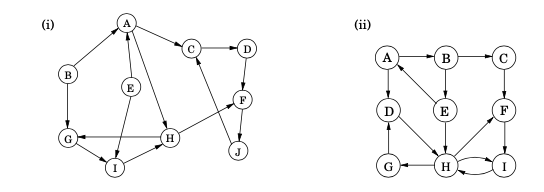
In each case answer the following questions.
If we write the GR in adjaceny list form it would be like, and the previst and post visit number would be like
GR= {'A'=['B','E'], 'B'=[], 'C'=['A','J'], 'D'=['C'], 'E'=[], 'F'=['D','H'], 'G'=['B','H'], 'H'=['A','I'], 'I'=['E','G'], 'J'=['F'] } previsit_number_GR={ 'A'=1 'B'=2 'C'=7 'D'=10 'E'=4 'F'=9 'G'=14 'H'=12 'I'=13 'J'=8 } postvisit_number_GR={ 'A'=6 'B'=3 'C'=20 'D'=11 'E'=5 'F'=18 'G'=15 'H'=17 'I'=16 'J'=19 } descending_order_of_post_visit=[C,J,F,H,I,G,D,A,E,B]
Step2. run dfs on the input of order of vertex would be [C,J,F,H,I,G,D,A,E,B]
previsit_number_G={ 'A'=14 'B'=18 'C'=1 'D'=2 'E'=16 'F'=3 'G'=10 'H'=9 'I'=11 'J'=4 } postvisit_number_G={ 'A'=15 'B'=19 'C'=8 'D'=7 'E'=17 'F'=6 'G'=13 'H'=14 'I'=12 'J'=5 }
The order of how we find strongly connected components (SCCs) would be {},{},{},{},{}
(ii)
Step1 Dfs on GR and order it in descending postvisit order
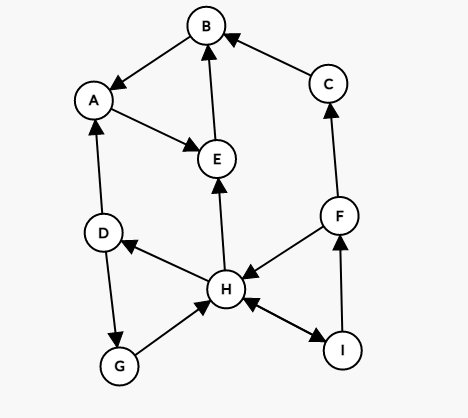
If we write the GR in adjaceny list form it would be like, and the previsit and postvisit number is
GR= { 'A'=['E'], 'B'=['A'], 'C'=['B'], 'D'=['A','G'], 'E'=['B'], 'F'=['C','H'], 'G'=['H'], 'H'=['D','E','I'], 'I'=['F','H'], } previsit_number_GR={ 'A'=1 'B'=3 'C'=6 'D'=8 'E'=2 'F'=12 'G'=9 'H'=10 'I'=11 } postvisit_number_GR={ 'A'=6 'B'=4 'C'=7 'D'=17 'E'=5 'F'=13 'G'=16 'H'=15 'I'=14 } descending_order_of_post_visit=[D,G,H,I,F,C,A,E,B]
Step2: run dfs on the input of order of vertex would be [D,G,H,I,F,C,A,E,B]
previsit_number_G={ 'A'=13 'B'=14 'C'=11 'D'=1 'E'=15 'F'=3 'G'=7 'H'=2 'I'=4 } postvisit_number_G={ 'A'=18 'B'=17 'C'=12 'D'=10 'E'=16 'F'=6 'G'=8 'H'=9 'I'=5 }
The order of how we find strongly connected components (SCCs) would be {},{},{}
(b) Which are source SCCs and which are sink SCCs?
(i)
source SCCs:{},{}
sink SCCs: {}
(ii)
source SCCs:{}
sink SCCs:{}
(c) Draw the “metagraph” (each meta-node is an SCC of G).
(i)
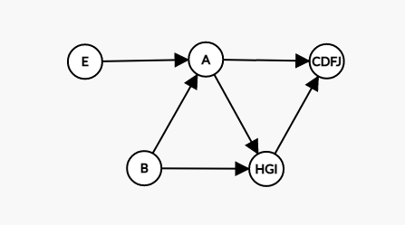
(ii)
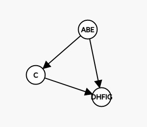
The reverse of a directed graph G = (V,E) is another directed graph GR = (V,ER) on the same vertex set, but with all edges reversed; that is, ER = {(v, u) : (u, v) ∈ E}.
graph = {'A': ['B', 'C'], 'B': ['C', 'D'], 'C': ['D'], 'D': ['C'], 'E': ['F'], 'F': ['C']}
My solution: this solution define a new dictionary which is graphr to store the new order. I use adjacency list here
First, create graphr with keys but empty adjacency list.
graphr = {key: [] for key in graph}
Second for each node in the graph, scan it's adjacency list and append the node into the adjacency list of the node it's edge leads to in graphr. Time complexity is log(m+n) here.
def reverse_graph(graph): global t t = 0 graphr = {key: [] for key in graph} # print(graphr) for key in graph: for i in graph[key]: graphr[i].append(key) t = t+1 return graphr
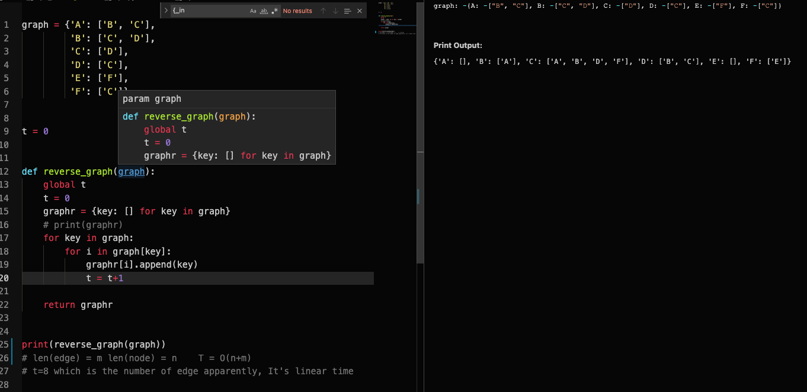
A bipartite graph is a graph G=(V,E) whose vertices can be partitioned into two sets(V = V1 ∪ V2 and V1 ∩ V2 = ∅) such that there are no edges between vertices in the same set (for instance, if u, v ∈ V1, then there is no edge between u and v).
Here's my solution. I use a color dictionary to store color for each node.
- At first the value for each node is Null.
- Then we do the dfs on the graph. If the node is in color dictionary.
- check if the input node_color is correspond to the node's value in the dictionary. If yes return True, else return False.
- Then do dfs on the nodes that current node's edges lead to, the input corrent color is the opposite of the currentcolor.
The time complexity is O(n+m)
def isBipartite(graph): color = {} def check_node_color(node, node_color): return color[node] == node_color def dfs(curr_node, curr_color): if curr_node not in color: # if node is not in color ,update dictionary color color[curr_node] = curr_color else: # if node is already in the colormap check if current color is correspond to colormap if check_node_color(curr_node, curr_color): return True else: return False # seach each edge of the current node for neighbour_nodes in graph[curr_node]: if not dfs(neighbour_nodes, not curr_color): return False return True for node in graph: if node not in color: if not dfs(node, True): return False return True
test case
graph1 = {'A': ['B', 'C'], 'B': ['C', 'D'], 'C': ['D'], 'D': ['C'], 'E': ['F'], 'F': ['C']}
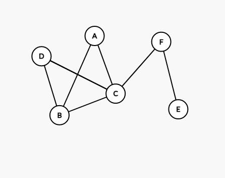
graph = { 'A': ['D', 'E', 'F'], 'B': ['D', 'E', 'F'], 'C': ['D', 'E', 'F'], 'D': ['A', 'B', 'C'], 'E': ['A', 'B', 'C'], 'F': ['A', 'B', 'C'] }
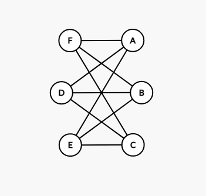
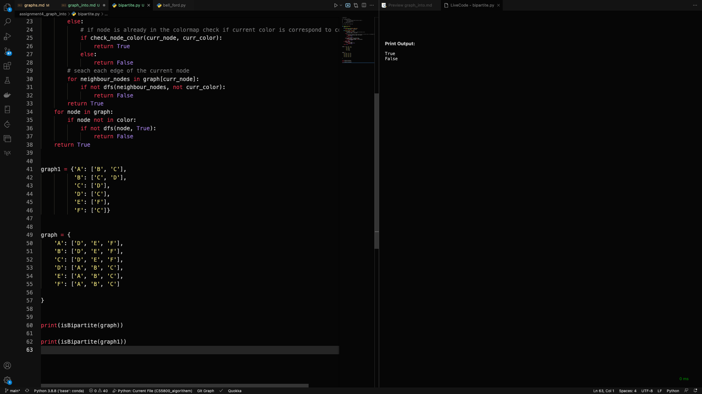
First, let's make one thing clear. In a bipartitle graph, every odd edge brings the cycle to set ,every even edge bring cycle back to set
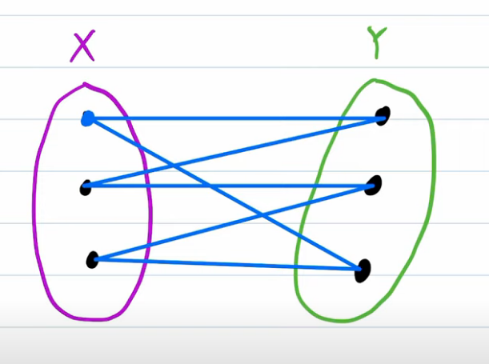
- let's prove by contradiction. Let and is a odd number.there is an odd cycle in our graph which we will call C and let's just say this cycle starts with the vertex v1 then goes to v2 ,all the way to some last vertex VN before returning to v1 since we assumed that this is an odd cycle we know the N has to be odd.
- brings cycle to , brings cycle back to , brings cycle to , brings cycle back to
- Let if is odd,let if is even
- we know that n is odd, and .
- Then ,but because Vn bring back to V1 which means they are adjacent. In a bipartitle graph, two adjacency vertex cannot be in one set. Then the Graph C is not a bipartitle
First, let's talk about what is the definition for connected undirected graph
An undirected graph is connected if there is a path between any pair of vertices.
Then look at the dfs_graph code. The recursion function is explore. if we carefully look at the explore() function, the base case for it is that we reach a node that all node its edge connects has been visited. We can remove this edge, and G is still connected, because there are edge from other nodes that leads to the nodes that 's edge leads.
def dfs(graph): global clockb clock = 0 visited = {a: False for a in graph} def explore(graph, node): visited[node] = True print(node) for nodei in graph[node]: if visited[nodei] == False: explore(graph, nodei) for node in graph: if visited[node] == False: explore(graph, node)
For every two nodes in a strongly connected directed graph, we say node v1,v2 V , there is a path from v1 to v2, and a path from v2 to v1. The following graph is an example of a strongly connected directed graph. It is actually a cycle if we remove any one of the node, it became a line. It's not strong connected
graph1 = {'A': ['B'], 'B': ['C'], 'C': ['D'], 'D': ['F'], 'F': ['A']}
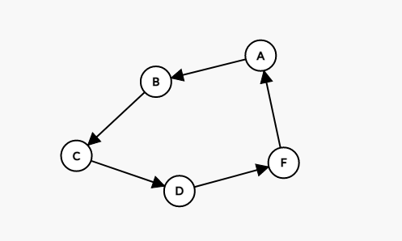
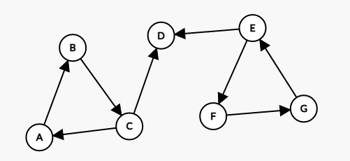
graph1 = {'A': ['B'], 'B': ['C'], 'C': ['A'], 'C': ['D'], 'E': ['D'], 'E': ['F'], 'F': ['G'], 'G': ['E'], }
Suppose a CS curriculum consists of n courses, all of them mandatory. The prerequisite graph G has a node for each course, and an edge from course v to course w if and only if v is a prerequisite for w. Find an algorithm that works directly with this graph representation, and computes the minimum number of semesters necessary to complete the curriculum (assume that a student can take any number of courses in one semester). The running time of your algorithm should be linear.
Graph = { 'a': ['b'], 'b': ['d'], 'c': ['d'], 'd': ['e'], 'e': ['f', 'g'], 'f': [], 'g': ['h'], 'h': [] }
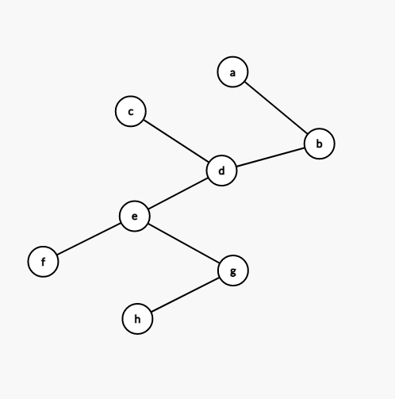
def find_source(graph): source = set() not_source = set() # 这个方法其实是m次 for node in Graph: for edge in Graph[node]: not_source.add(edge) for node in Graph: if node not in not_source: source.add(node) return source
def find_longest_path_in_source_bellford(graph, source): dist = {} p = {} max = 0 for v in graph: dist[v] = -10000 p[v] = None dist[source] = 0 for u in graph: for v in graph[u]: if dist[v] < dist[u]+1: dist[v] = dist[u]+1 p[v] = u all_values = list(dist. values()) sorted(all_values) return all_values[-1]
python {sourse1:longest_path, source2:longest_path} , Then pick the max value of the dictionary. And plus 1 to the max number you will get the semester numberdef solution(graph): longest_path_for_each_source = {} # this dictionary stores longest path from each node to sink source = find_source(graph) # m for i in source: # len(source)*m longest_path_for_each_source[i] = find_longest_path_in_source_bellford( graph, i) longest = list(longest_path_for_each_source.values()) sorted(longest) return longest[-1]+1
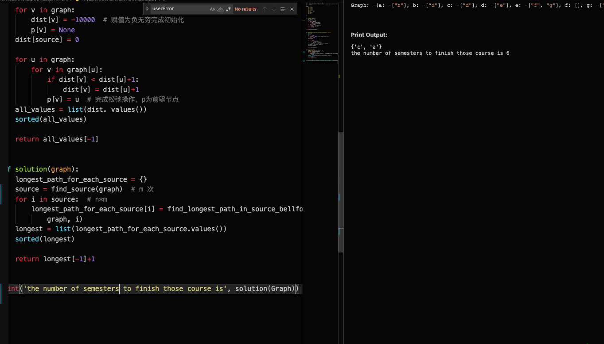